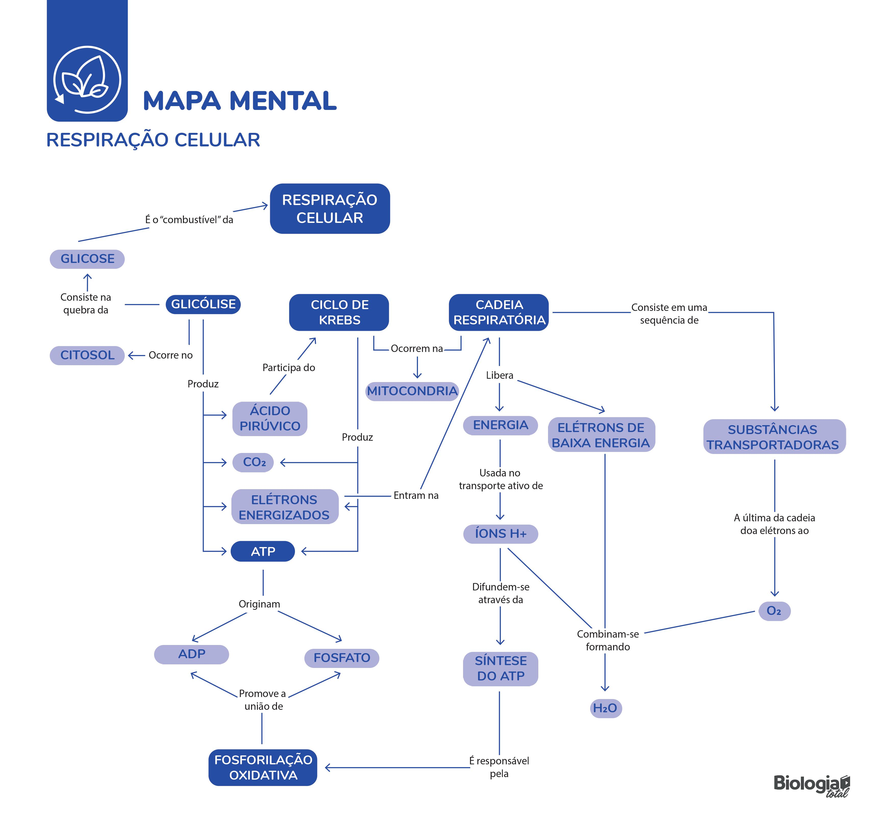

Revisões Biologia
Clique aqui para baixar sua revisão de bioenergética. Revisões para outros conteúdos disponíveis no menu ao lado.
IRMAO SE VC TA NO CSJ E N VAI CAIR BIOENERGETICA N PCISA BAIXAR E ESTUDAR BIOENERGETICA NE PORRA
Clique na apostila para baixar
Apostila Tecido conjuntivoApostila Muscular e nervoso histologia
Tecido Epitelial apostila
Embriologia Apostila
Mapa mental de respiração celular, perfeito pra você tirar 10 na prova do Clóvis/Strobino!
